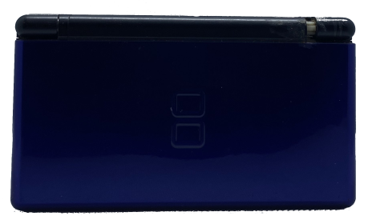
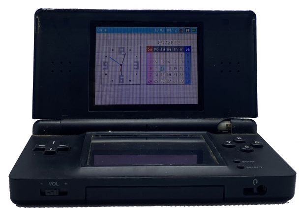
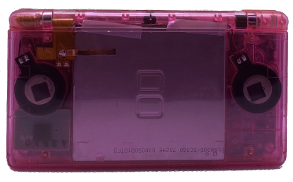
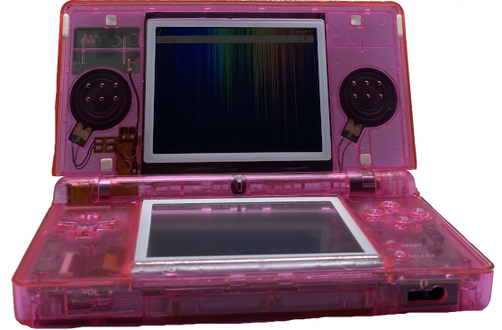
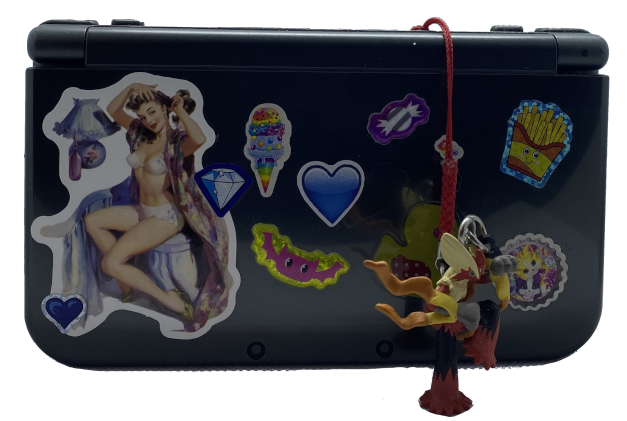
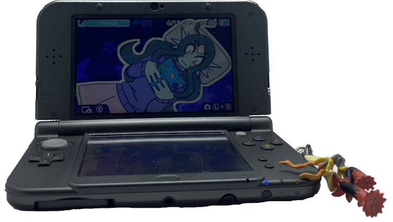

Welcome!
this page will introduce you to my handheld gaming console collection. it is a small collection, but one i highly cherish. i don't collect for any financial gain or anything like that, i simply collect because i just like having cool stuff.
these are almost all nintendo consoles, but i have something from sony as well. shall we get right to it?
Blue DS Lite
this is the oldest console in my collection. it was gifted to me by a friend i've now lost contact with. he gave it to me along with a copy of Pokemon Diamond after hearing that i've never played a pokemon game before. i remember him shipping it to me and everything, and getting the package and all. i still have the copy of Diamond somewhere.
it's a little dirty and has a busted hinge, but it doesn't really bother me that much. the hinge is also rather loose, which can be a bit bothersome, but i cherish it nonetheless.

Pink Transparent DS Lite
this... was an impulse purchase, one day. an ebay seller was selling refurbished dses, and i originally ordered one in transparent blue. however, the seller sent me a message telling me they were out of that particular housing, and asked me if i would be interested in a different color. i went with pink, and i think this was what sparked my new love for pink in the recent year lol.
it feels a little funny, but that's really all i have to complain about. i love this thing to death otherwise. i've always loved transparent technology. i have a transparent pro controller too lol. anyways, a while back my girlfriend gave me a ds flash cart, so that's currently loaded up on this ds right now.

New 3DS XL
this was a birthday present for my 16th. i actually... didn't touch it for a while after i got it. i only had animal crossing for it and i eventually got bored of that. so it's in relatively great condition. once i moved out however, i hacked it. now i play it a lot more! it was also my first console i've ever hacked. it was very stressful lol. i even made my own theme and badge for it, featuring my oc Mei.
i kind of regret putting stickers directly onto it, but i was in a sticker-bombing phase. i try to make peace with it now. maybe i'll put more on there, it seems a little empty. in other news, now that i think about it, i think my copy of Diamond is in this console...